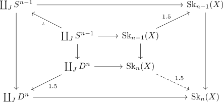
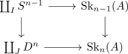

cw subcomplex homotopy equivalant to an open subset
Proposition
Let $(X, \emptyset, \mathrm{SK}_n(X))$ be a CW-Complex, $A \subseteq X$ a CW subcomplex. Then $A$ is homotopy equivalent to an open subset $O \subseteq X$.
Proof
construction of the open set
Let
Then this maps keeps the boundary constant
Hence we can inductively construct maps

to get a map
Thus consider
openness
Since a subcomplex is given by

for an indexing set $I \subseteq J$ it follows that $1.5^{-1}[A]$ contains an open subset of
hence by open set in a CW complex
homotopy
consider the maps
where both maps are continuosu by continuous map and restriction to the image for $A \rightarrow X, \tilde{A} \rightarrow X$
Then it follows that
hence it remains to show that
This follows by taking a homotopy $H: D^n \times [0,1] \rightarrow D^n$ rel $\partial S^{n-1}$ from $\mathrm{id}$ to $1.5$ and using homotopy out of a colimit.
Here rel $\partial S^n$ ensures that the set theoretic map is welldefined.
h